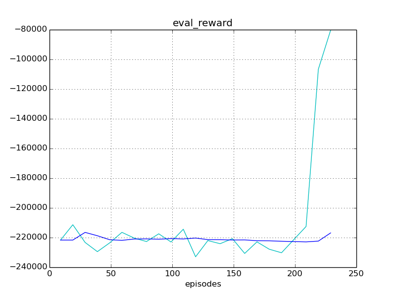
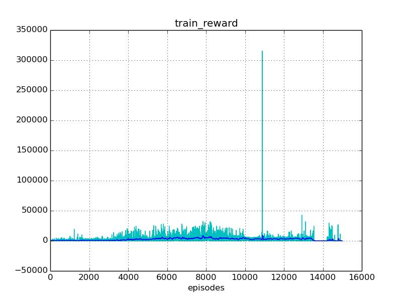
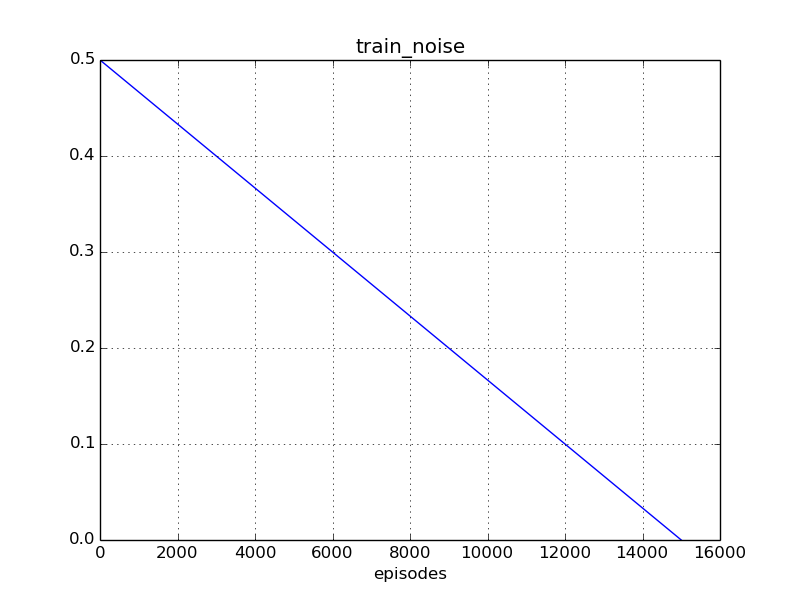
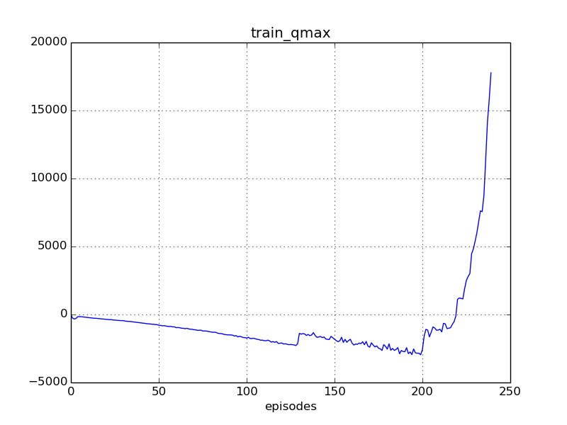

Experiment #008
Reward: -210646
Qmax: 1521
Left: 13:04:06 (2%)
Report time: 2017-01-31 20:20:57
Host name: bernard
Configuration
Experiment:
exp.base_path: experiments/
exp.episodes: 15000
exp.id: 008
exp.logger_class: core.logger.Logger
exp.mind_class: tf.mind.TensorflowMind
exp.platform_class: tf.platform.TensorflowPlatform
exp.save_every_episodes: 200
exp.steps: 150
exp.world_class: zoo.scorpion.world.ScorpionWorld
Algorithm:
alg.batch_size: 128
alg.buffer_size: 100000
alg.noise_rate_method: linear_05_00
alg.noise_sigma: 0.1
alg.noise_theta: 0.01
Mind:
mind.evaluate_every_episodes: 10
Environment:
env.assets: ./assets/
env.done_method: done_ball_under_1
env.episode_jpos_method: jpos_init_ball
env.frame_skip: 2
env.id: Zoo:Mujoco:Scorpion-v1
env.init_every_episods: 30
env.reward_method: ball_height_reward
env.step_jpos_method: jpos_do_nothing
env.target_range_xz: [[-0.7, 0.7], [0.5, 1.0]]
env.world.agents: ['scorpion', 'ball']
env.world.scorpion.agents: ['tentacle', 'target']
env.world.scorpion.algorithm:
env.world.scorpion.class: zoo.scorpion.scorpion.ScorpionAgent
env.world.scorpion.inputs: ['ball_x', 'ball_y', 'ball_z']
env.world.scorpion.tentacle.algorithm:
env.world.scorpion.tentacle.inputs: ['target_x', 'target_z']
env.world.scorpion.tentacle.mind_path: experiments/003/mind/world.scorpion.tentacle
Reporting:
report.diagram_mean_frame: 50
report.refresh_html_every_secs: 90
report.summary_every_episodes: 30
report.write_every_episodes: 10
Progress
Episodes: 240
Steps: 36000
Total time: 13:16:50
spent: 00:12:44 (1%)
left: 13:04:06
Finish: 09:25:03 2017-02-01
Performance: 0.31 per sec
Results
Train reward: +587.48
Eval reward: -210645.68
Diagrams




Instances
Experiment:
id: 008
work_path: experiments/008
platform: TensorflowPlatform
world: ScorpionWorld:
env_id: Zoo:Mujoco:Scorpion-v1
model_path: ./assets/world.xml
total_act_dim: 6
env: ScorpionEnv:
model_path: /home/roman-ml/prj/rmus/zoo/zoo/scorpion/experiments/008/environment/env_model.xml
sensors:
world.scorpion.sensor_head_pos [1]
world.scorpion.sensor_head_vel [1]
world.scorpion.tentacle.sensor_s1_pos [1]
world.scorpion.tentacle.sensor_s1_vel [1]
world.scorpion.tentacle.sensor_s2_pos [1]
world.scorpion.tentacle.sensor_s2_vel [1]
world.scorpion.tentacle.sensor_s3_pos [1]
world.scorpion.tentacle.sensor_s3_vel [1]
world.scorpion.target.sensor_x [1]
world.scorpion.target.sensor_z [1]
world.ball.sensor_x [1]
world.ball.sensor_y [1]
world.ball.sensor_z [1]
world.ball.sensor_vx [1]
world.ball.sensor_vy [1]
world.ball.sensor_vz [1]
world.ball.sensor_accelerometer [3]
actuators:
world.scorpion.actuator_head [-10 +10]
world.scorpion.actuator_target_x [-2 +2]
world.scorpion.actuator_target_z [-1 +2]
world.scorpion.tentacle.actuator_s1 [-2000 +2000]
world.scorpion.tentacle.actuator_s2 [-1500 +1500]
world.scorpion.tentacle.actuator_s3 [-500 +500]
sensors:
no
actuators:
no
observations:
sensor: world.scorpion.sensor_head_pos=[-2.09]
sensor: world.scorpion.sensor_head_vel=[-0.000327]
inputs: world.scorpion.inputs_ball_x=[+0.00207]
inputs: world.scorpion.inputs_ball_y=[+0.00359]
inputs: world.scorpion.inputs_ball_z=[-3.81]
sensor: world.scorpion.tentacle.sensor_s1_pos=[+0.328]
sensor: world.scorpion.tentacle.sensor_s1_vel=[+2.47]
sensor: world.scorpion.tentacle.sensor_s2_pos=[+1.58]
sensor: world.scorpion.tentacle.sensor_s2_vel=[-3.22]
sensor: world.scorpion.tentacle.sensor_s3_pos=[-2.83]
sensor: world.scorpion.tentacle.sensor_s3_vel=[+1.01]
inputs: world.scorpion.tentacle.inputs_target_x=[+2.01]
inputs: world.scorpion.tentacle.inputs_target_z=[+1.01]
sensor: world.scorpion.target.sensor_x=[+2.01]
sensor: world.scorpion.target.sensor_z=[+1.01]
sensor: world.ball.sensor_x=[+0.00207]
sensor: world.ball.sensor_y=[+0.00359]
sensor: world.ball.sensor_z=[-3.81]
sensor: world.ball.sensor_vx=[+0.181]
sensor: world.ball.sensor_vy=[+0.314]
sensor: world.ball.sensor_vz=[-6.32]
sensor: world.ball.sensor_accelerometer=[-0.0302,-0.0523,+1.05]
mind: TensorflowMind:
saved_episode: None
algorithm: DummyAlgorithm:
scope: DummyAlgorithm_world
obs_dim: 24
act_dim: 0
agents:
world.scorpion: ScorpionAgent >>>> training <<<<:
model_path: ./assets/scorpion.xml
alg_obs: [-2.09,-0.000327,+0.00207,+0.00359,-3.81,+0.328,+2.47,+1.58,-3.22,-2.83,+1.01,+2.01,+1.01,+2.01,+1.01]
alg_obs_dim: 15
alg_act_dim: 3
sensors:
world.scorpion.sensor_head_pos [1]
world.scorpion.sensor_head_vel [1]
actuators:
world.scorpion.actuator_head [-10 +10]
world.scorpion.actuator_target_x [-2 +2]
world.scorpion.actuator_target_z [-1 +2]
observations:
sensor: world.scorpion.sensor_head_pos=[-2.09]
sensor: world.scorpion.sensor_head_vel=[-0.000327]
inputs: world.scorpion.inputs_ball_x=[+0.00207]
inputs: world.scorpion.inputs_ball_y=[+0.00359]
inputs: world.scorpion.inputs_ball_z=[-3.81]
sensor: world.scorpion.tentacle.sensor_s1_pos=[+0.328]
sensor: world.scorpion.tentacle.sensor_s1_vel=[+2.47]
sensor: world.scorpion.tentacle.sensor_s2_pos=[+1.58]
sensor: world.scorpion.tentacle.sensor_s2_vel=[-3.22]
sensor: world.scorpion.tentacle.sensor_s3_pos=[-2.83]
sensor: world.scorpion.tentacle.sensor_s3_vel=[+1.01]
inputs: world.scorpion.tentacle.inputs_target_x=[+2.01]
inputs: world.scorpion.tentacle.inputs_target_z=[+1.01]
sensor: world.scorpion.target.sensor_x=[+2.01]
sensor: world.scorpion.target.sensor_z=[+1.01]
mind: TensorflowMind:
saved_episode: 199
algorithm: DDPG_PeterKovacs
scope: DDPG_PeterKovacs_world_scorpion
obs_dim: 15
act_dim: 3
buffer: ReplayBuffer:
buffer_size: 100000
num_experiences: 19377
episode: 239
agents:
world.scorpion.tentacle: MujocoAgent:
model_path: ./assets/tentacle.xml
alg_obs: [+0.328,+2.47,+1.58,-3.22,-2.83,+1.01,+2.01,+1.01]
alg_obs_dim: 8
alg_act_dim: 3
sensors:
world.scorpion.tentacle.sensor_s1_pos [1]
world.scorpion.tentacle.sensor_s1_vel [1]
world.scorpion.tentacle.sensor_s2_pos [1]
world.scorpion.tentacle.sensor_s2_vel [1]
world.scorpion.tentacle.sensor_s3_pos [1]
world.scorpion.tentacle.sensor_s3_vel [1]
actuators:
world.scorpion.tentacle.actuator_s1 [-2000 +2000]
world.scorpion.tentacle.actuator_s2 [-1500 +1500]
world.scorpion.tentacle.actuator_s3 [-500 +500]
observations:
sensor: world.scorpion.tentacle.sensor_s1_pos=[+0.328]
sensor: world.scorpion.tentacle.sensor_s1_vel=[+2.47]
sensor: world.scorpion.tentacle.sensor_s2_pos=[+1.58]
sensor: world.scorpion.tentacle.sensor_s2_vel=[-3.22]
sensor: world.scorpion.tentacle.sensor_s3_pos=[-2.83]
sensor: world.scorpion.tentacle.sensor_s3_vel=[+1.01]
inputs: world.scorpion.tentacle.inputs_target_x=[+2.01]
inputs: world.scorpion.tentacle.inputs_target_z=[+1.01]
mind: TensorflowMind:
saved_episode: 22399
algorithm: DDPG_PeterKovacs
scope: DDPG_PeterKovacs_world_scorpion_tentacle
obs_dim: 8
act_dim: 3
buffer: ReplayBuffer:
buffer_size: 100000
num_experiences: 100000
episode: 22399
agents:
no
world.scorpion.target: MujocoAgent:
model_path: ./assets/target.xml
alg_obs: [+2.01,+1.01]
alg_obs_dim: 2
alg_act_dim: 0
sensors:
world.scorpion.target.sensor_x [1]
world.scorpion.target.sensor_z [1]
actuators:
no
observations:
sensor: world.scorpion.target.sensor_x=[+2.01]
sensor: world.scorpion.target.sensor_z=[+1.01]
mind: TensorflowMind:
saved_episode: None
algorithm: DummyAlgorithm:
scope: DummyAlgorithm_world_scorpion_target
obs_dim: 2
act_dim: 0
agents:
no
world.ball: MujocoAgent:
model_path: ./assets/ball.xml
alg_obs: [+0.00207,+0.00359,-3.81,+0.181,+0.314,-6.32,-0.0302,-0.0523,+1.05]
alg_obs_dim: 9
alg_act_dim: 0
sensors:
world.ball.sensor_x [1]
world.ball.sensor_y [1]
world.ball.sensor_z [1]
world.ball.sensor_vx [1]
world.ball.sensor_vy [1]
world.ball.sensor_vz [1]
world.ball.sensor_accelerometer [3]
actuators:
no
observations:
sensor: world.ball.sensor_x=[+0.00207]
sensor: world.ball.sensor_y=[+0.00359]
sensor: world.ball.sensor_z=[-3.81]
sensor: world.ball.sensor_vx=[+0.181]
sensor: world.ball.sensor_vy=[+0.314]
sensor: world.ball.sensor_vz=[-6.32]
sensor: world.ball.sensor_accelerometer=[-0.0302,-0.0523,+1.05]
mind: TensorflowMind:
saved_episode: None
algorithm: DummyAlgorithm:
scope: DummyAlgorithm_world_ball
obs_dim: 9
act_dim: 0
agents:
no
logger: Logger:
saved_time: 00:10:10
train_history: 240
eval_history: 22
reporter: Reporter:
html_path: /home/roman-ml/prj/rmus/zoo/zoo/scorpion/experiments/008/reporter/report.html